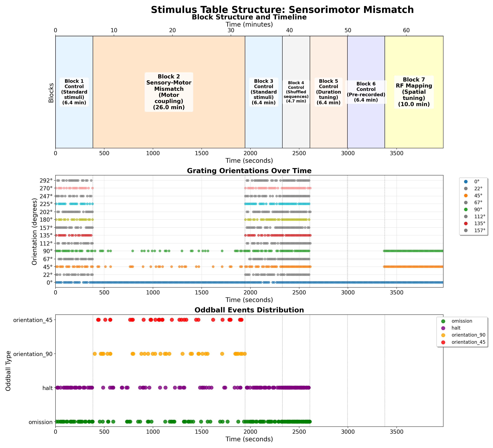

Sensory-Motor Closed-Loop Stimulus
Overview
The Sensory-Motor Closed-Loop stimulus provides a visual environment where the movement of the mouse (via a running wheel) directly controls the phase of drifting gratings. This creates a closed sensorimotor loop that allows investigation of how neural responses are modulated by self-generated visual feedback. In the oddball variant, the relationship between wheel movement and visual feedback is occasionally broken, creating sensorimotor prediction errors.
Stimulus Structure

The figure above shows a comprehensive analysis of the sensory-motor mismatch stimulus structure:
- Block Structure Timeline: Displays the temporal organization including:
- Motor Oddball Blocks: Main experimental periods where sensory-motor coupling is established and violated
- Motor Control Blocks: Baseline periods with standard sensory-motor relationships
-
RF Mapping Blocks: Spatial tuning phases
-
Grating Orientations Over Time: Shows how visual stimuli change throughout the session, including both coupled and decoupled phases
-
Oddball Events Distribution: Highlights sensory-motor mismatch events where the expected relationship between wheel movement and visual feedback is violated
This analysis demonstrates how the protocol creates predictable sensory-motor relationships and systematically violates them to study prediction error signals in the context of self-generated sensory feedback.
Script Location
The stimulus script is located at:
- /code/stimulus-control/src/Sensory_motor_oddball_slap2.bonsai - Closed-loop implementation with oddball functionality
Hardware Requirements
- SLAP2 imaging system
- Behavior device with encoder/wheel for tracking animal movement
- Running wheel connected to an encoder on Port 2
Stimulus Parameters
Basic Parameters
- Display Type: Drifting gratings
- Spatial Frequency: 0.04 cycles per degree
- Temporal Frequency: 0 Hz (static, since motion is controlled by the wheel)
- Contrast: 1.0 (full contrast)
- Size: 90° (covering a large portion of the visual field)
- Aperture: 90°
- Angle: 0° (horizontal grating)
Oddball Parameters
- Oddball Frequency: Random intervals, controlled by experiment duration and number of oddballs
- Oddball Duration: Configurable, default is ~1 second per event
- Total Oddballs: Configurable, default is 5 per session
- Oddball Type: Orientation change (0° → 45° during oddball events)
Experimental Design
Closed-Loop Sensorimotor Integration
The core of this experiment is the direct coupling between:
- Mouse Movement: Rotary encoder on Port 2 tracks the animal's wheel running
- Visual Feedback: Encoder data is used to update the phase of the visual gratings in real-time
This creates a predictable relationship where: - Forward wheel movement → Forward grating motion - Backward wheel movement → Backward grating motion - Stationary → Static grating
The script implements this coupling by: - Reading encoder values from the behavior device - Dividing encoder values by 300 to create an appropriate scaling factor - Using the modulus of 360 to convert the wheel position to grating phase - Applying this calculated phase to the gratings in real-time
Oddball Implementation
The oddball implementation introduces brief violations of the sensorimotor contingency:
- Random Timing: Oddballs occur at unpredictable intervals throughout the session
- Brief Duration: Each oddball lasts for a configurable duration (default ~1 second)
- Orientation Change: During an oddball, the grating orientation changes from 0° to 45°
- Limited Quantity: A configurable number of oddballs (default 5) occur per session
- Layer Priority: Oddball gratings are displayed on a higher layer (Layer 1) than the standard gratings (Layer 0)
The oddball generator uses frame permutation for randomization and implements a detection system to display the oddball stimulus when the current frame matches one of the predefined oddball frames.
Technical Implementation
- Encoder values are acquired at high frequency and published to a subject called "Encoder"
- The DrawGratings workflow subscribes to this encoder data
- Real-time mapping applies encoder position to grating phase
- The temporal frequency parameter is set to 0 Hz as the movement is controlled by the wheel
Data Collection
- Running data is collected via an encoder on Port 2 of the behavior device
Synchronization
- SLAP2 recording is automatically started and stopped during the experiment
- The experiment can be controlled via spacebar (start) and End key (stop)
Running the Experiment
- Start the Bonsai workflow
- Press the spacebar to begin the experiment
- The mouse can then control the gratings by running on the wheel
- In the oddball variant, brief sensorimotor mismatches will occur automatically
- The experiment can be terminated with the End key
Related Documents
- Bonsai Instructions: Setup and deployment of Bonsai code
- Experimental Plan: Overview of all experimental paradigms
- SLAP2 Hardware: Details about the SLAP2 imaging system
- Standard Oddball: Information about the related standard oddball paradigm
💬 Start a discussion for this page on GitHub (A GitHub account is required to create or participate in discussions)